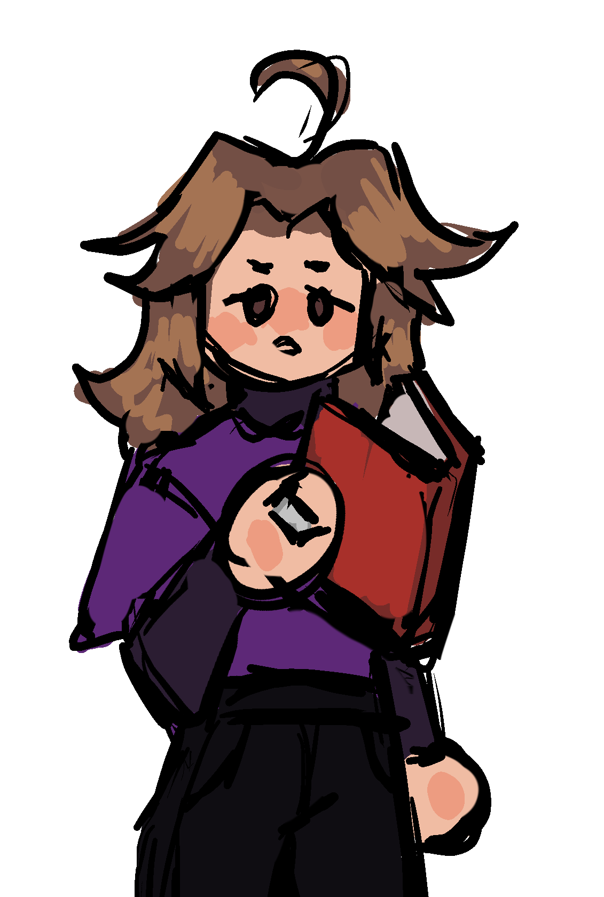

МОИ СТИХОТВОРЕНИЯ

Любить себя
(25 февраля 2026)
Люди любят свои идеалы.
Кто-то любит чужие глаза.
Кто-то любит, когда ему душно,
А кому-то свобода важна.
...
Люди любят взбираться на скалы
Или вовсе у моря без сил,
Провожать на закате солнце
Пусть об этом никто не просил.
...
Люди любят воспоминанья.
Кто-то — кофе в четыре утра,
И прогулки с друзьями по парку.
Все по-своему любят себя.
Твои глаза
(20 января 2026)
Меня пугает неизвестность,
Пугает твоя красота.
Пугает то, что в эти чувства
Срываюсь к тебе свысока.
...
Я словно жертвоприношенье,
Сама иду на казнь свою.
Я добровольно соглашенье
На отсечение даю.
...
Твои глаза меня пленяют.
Они красивы и милы,
Но снится мне — они бросают
И оставляют лишь следы.
...
И остаётся лишь осадок,
Крупицы чая на столе.
Твои глаза — моя услада.
Мои — не нравятся тебе...
Друзьям
(10 декабря 2025)
Тихо в комнате. Холодно очень.
За окном - чужая весна.
Я смотрю на тех кому точно
Никакая судьба не страшна.
...
Я в тени их поступков лучистых,
Я с проклятьем бессонных ночей.
Мам, я вижу на то, как смело
Поднимаются они к вершинам, с полей.
...
С ними буду шагать без опаски.
Чтобы в сердце - отвага. Не грусть.
Мам, я с ними как-будто бы в сказке,
Я - не главный герой. Ну и пусть.
Капитан
(16 марта 2025)
Я в стопку сложил все бумаги
И взял револьвер в свою кисть.
Прощайте, простые салаги.
Я проиграл эту жизнь.
...
Я ро́жден был капитаном.
Привык не сдаваться в плен.
И пули ловил я станом
Не уходя в размен.
...
Я вольная чайка моря,
Но заперт я на борту.
И пережил много я горя,
И рад тебя видеть в порту.
...
Был рад. И душой и сердцем.
Был счастлив моментам с тобой.
Но был я растоптан берцем.
Ты с офицером. Отстой...
Один
(2 октября 2024)
Пустота одинока,
Люди смотрят с картин.
Бездна всё же глубока
И ты всё же один.
...
Твои звуки бесшумные,
Голос твой - тихий стон.
Мы такие далёкие,
Я не знаю где дом.
...
Дом не знает с кем ты теперь,
Ему можно не знать.
Отворил дверь ты в комнату,
Лёг в кровать - сразу спать.
...
В пустоте в полудрёме ты,
Смотришь вдаль словно в мир.
Насмехаешься с бездны ты,
Словно автор сатир.
...
Словно бросил ты детище,
Отложил все дела.
Сможешь всё же узреть ещё,
Когда бросят тебя.
...
И с иронией гнусною,
Скажешь мол "Несломим"
Ха... Молчание тусклое.
Ты забыл? Ты - один.
Виселица
(20 января 2024)
Виселица веселится,
Ведь её сегодня день.
Думал, лучше застрелиться,
Но идти в гараж мне лень.
...
Я теперь намного выше
Понимаешь? Я - звезда!
Прицепился к самой крыше,
Все глазеют на меня.
...
Ветер тихонько качает
Бренный труп висящий мой.
И тихонько напевает
Мне мотив за упокой.
...
Я сегодня стал звездою,
Стал известен по стране.
Ведь покончил я с собою,
Сразу все грустят по мне.